ESTEVAN ELVANDRI .
I build cozy games, Colour Grading and Photoshoot, and I'm about to turn that craft into research — starting an Master Degree at Ming Chi University of Technology, Taiwan.
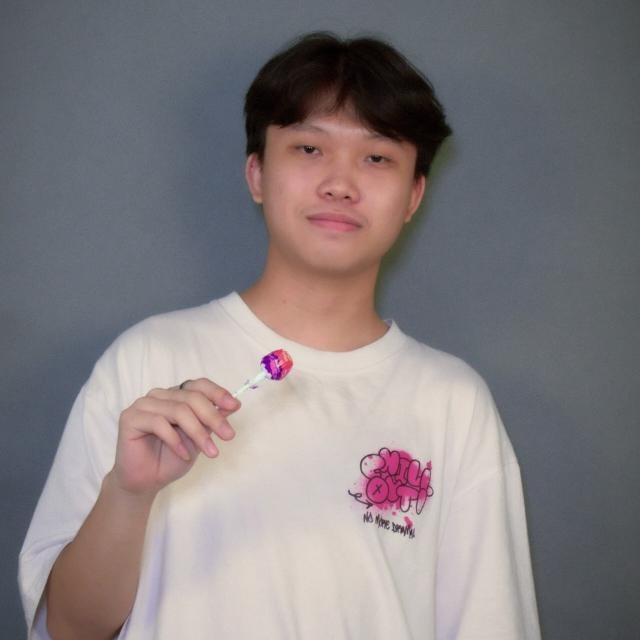
Game Development
Butik Pakde: Every Stitch Matters
A cozy simulation game built in Unity (C#), developed following the GDLC methodology. Players run a tailor shop: orders come in with randomized clothing type, color, and pattern, move through conveyor-belt stations, and get validated against a profit-and-waste system.
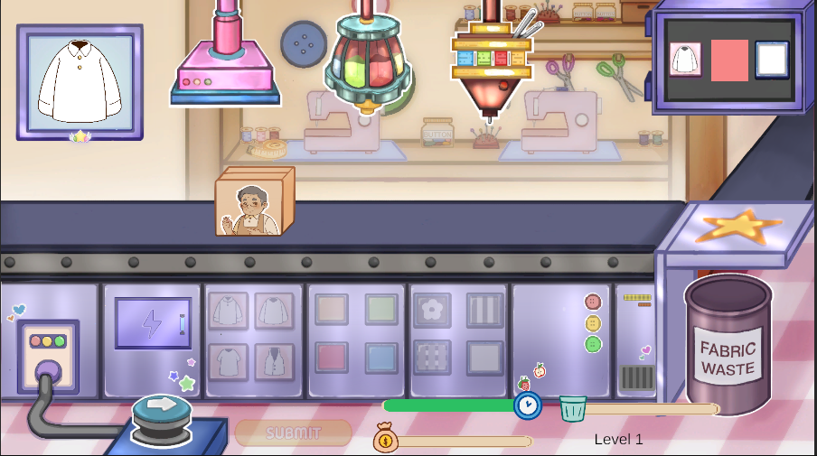
As the Full Programmer for Butik Pakde, I developed the entire game using Unity and C#, implementing core gameplay mechanics, user interface, game logic, and system integration. I also performed debugging and optimization to ensure a smooth and enjoyable gameplay experience.
Itch.io →Project Parenthood
Project Parenthood is a 2D side scrolling pixel art life simulation that explores the emotional journey of becoming a parent. Instead of focusing on fast paced action, the game highlights the quiet, meaningful moments that define family life from the final day of pregnancy to a child’s first steps into the world.
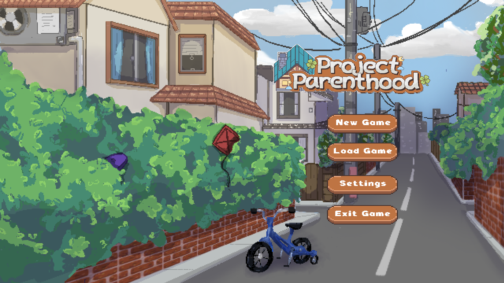
As the Gameplay Programmer for Project: Parenthood, I developed the core gameplay systems, including the Checklist System, Penalty System, and Main Menu. I also integrated gameplay mechanics with the UI and conducted debugging and playtesting to ensure a smooth and engaging player experience.
itch.io →Graphic Design & UI/UX
Visual Design
.png)


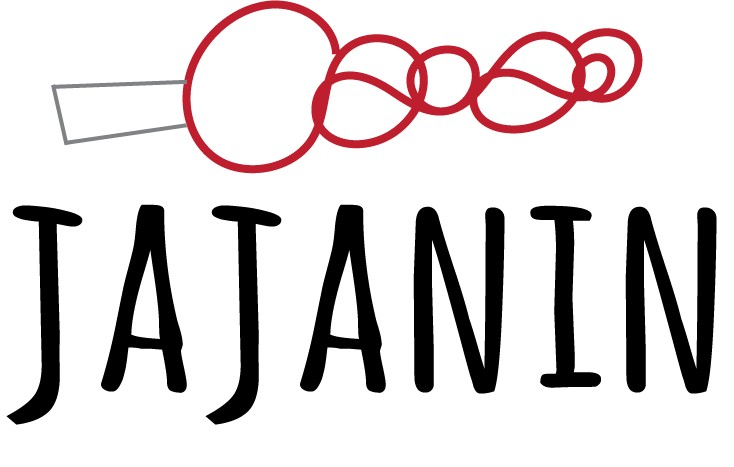
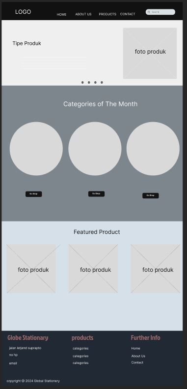
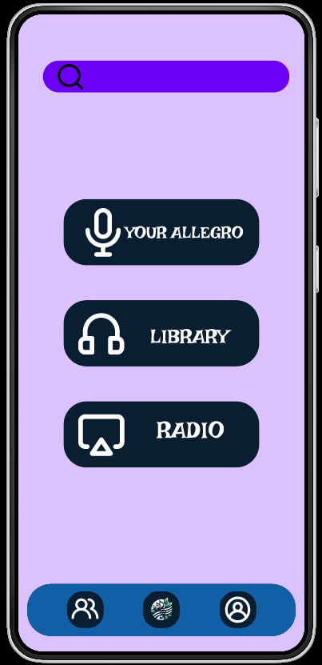
Color Grading & Photoshoots
Hands-on color grading work — favoring clean, fresh tonal palettes over heavy stylization. Hover or tap a frame to see the grade applied.
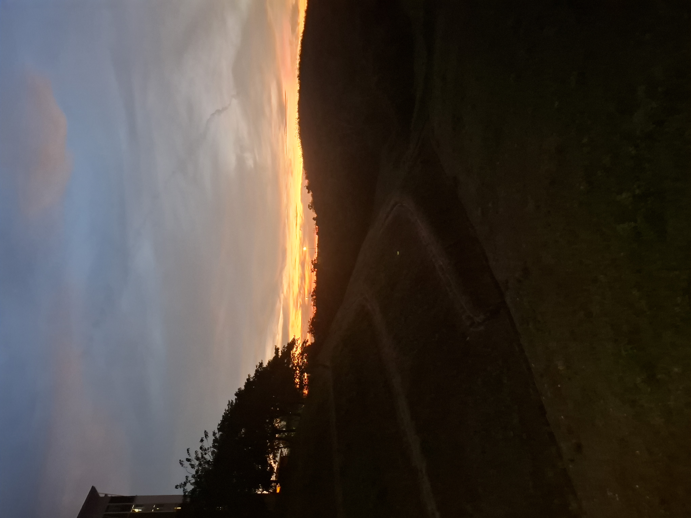
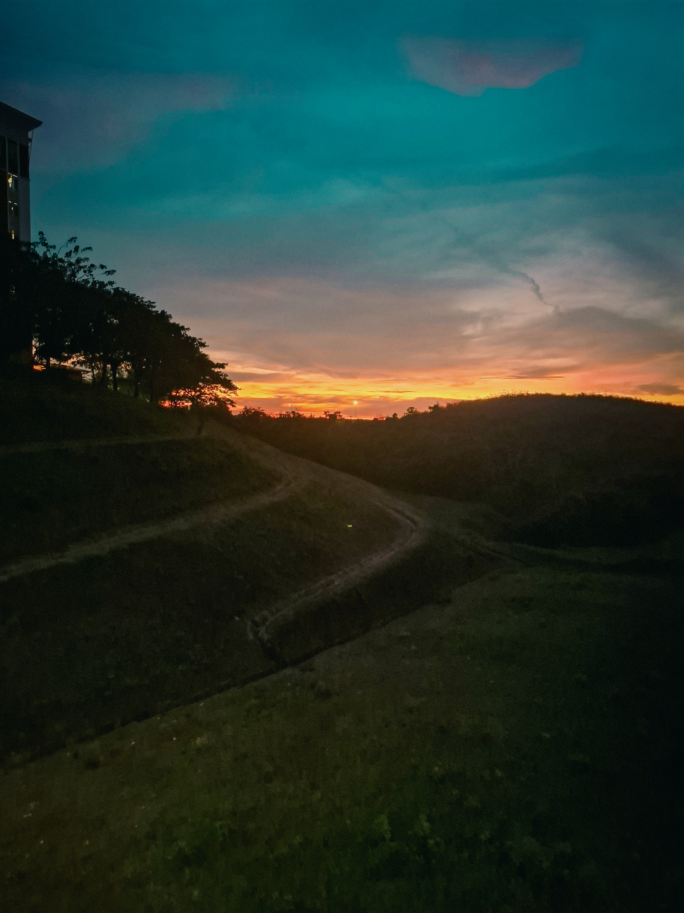
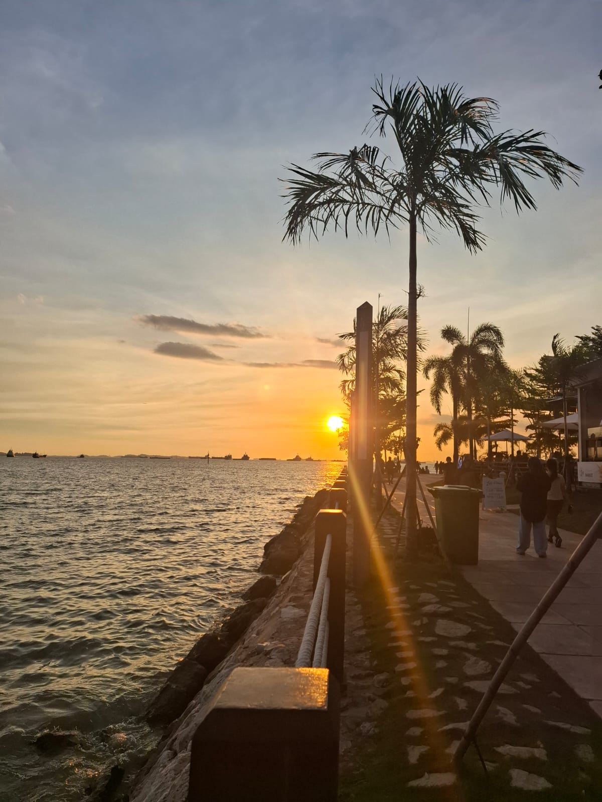
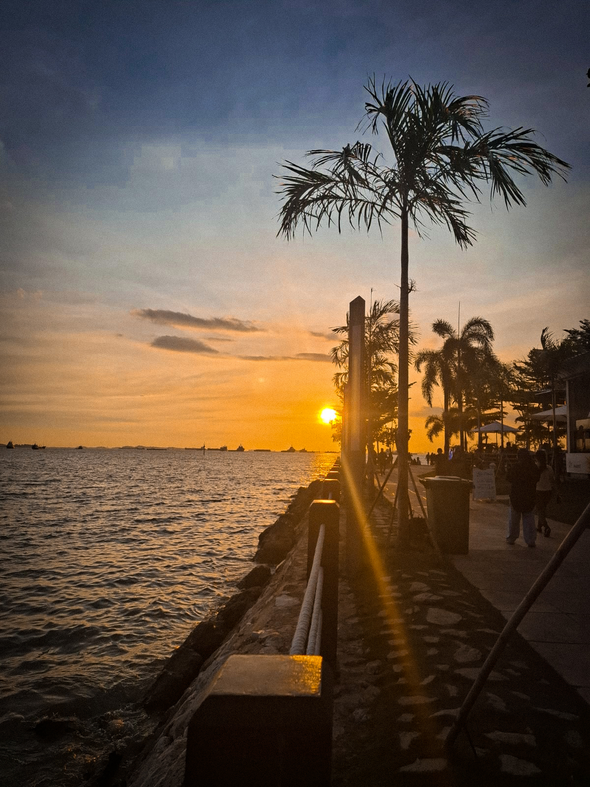
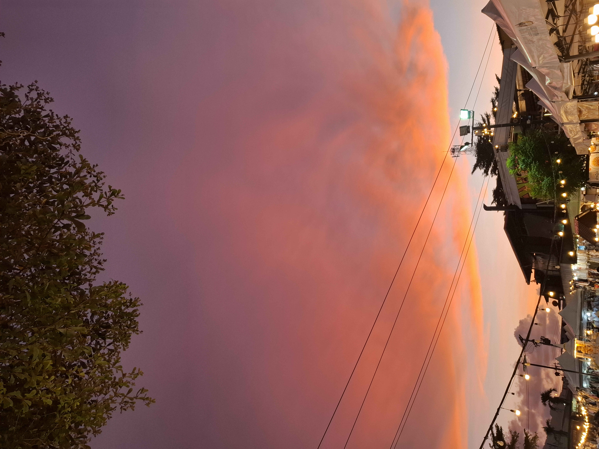

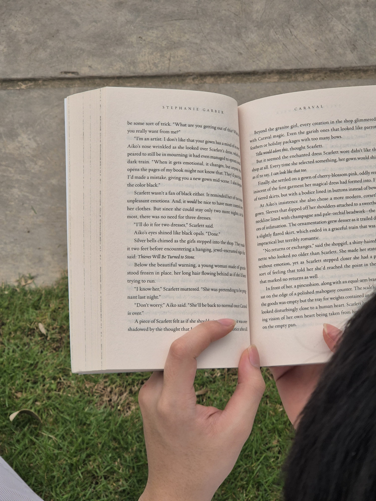
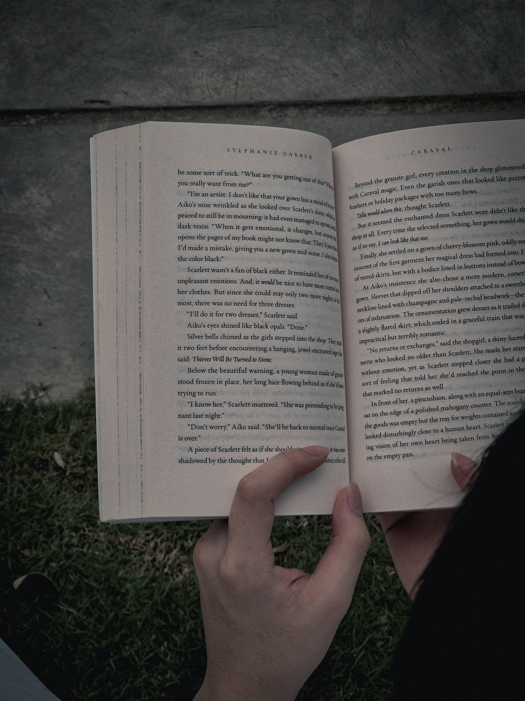
From Batam to New Taipei City
A running thread from coursework to certified independent study to graduate research.
Computer Science
Universitas Internasional Batam.
PT Infinite Learning, Batam
Building "Butik Pakde" as the program's flagship project.
Student Exchange—Universiti Teknikal Malaysia Melaka
Jalan Hang Tuah Jaya, 76100 Durian Tunggal, Melaka, Malaysia. Faculty of Information and Communication Technology.
Master Degree — Ming Chi University of Technology
New Taipei City, Taiwan. Research interests: game-based systems and human-computer interaction,interactive media,emotional design in short films.